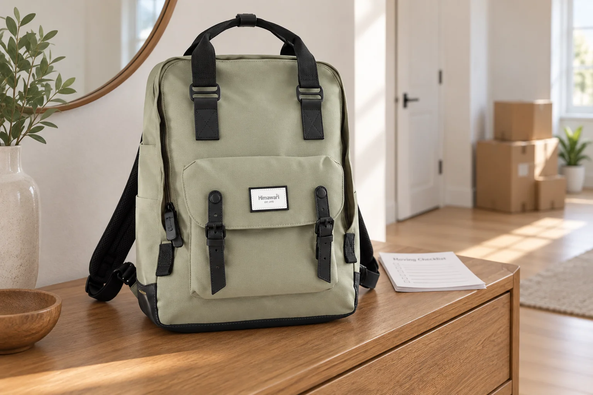

이삿짐 상자 밖에 남겨둘 하루의 물건

이사 상자를 닫고 나면 집 안의 물건 대부분이 묶음으로 바뀝니다. 하지만 옛집을 나설 때의 열쇠와 이동 중 연락 도구, 새집에 들어갈 때 사용할 안내는 계속 꺼내야 합니다. 마지막으로 포장한 상자에 넣어두면 그 상자가 어디에 실렸는지부터 찾게 될 수 있습니다. 이사 당일 직접 관리할 백팩 한 개를 정하고 상자에 넣지 않을 물건을 구분하면, 이동하는 동안 필요한 것의 위치가 분명해집니다.
목록은 옛집 출발부터 새집 첫 정리까지의 순서로 적어볼 수 있습니다. 문을 잠글 때 무엇을 쓰는지, 누구와 연락할지, 새집 출입에 어떤 안내가 필요한지 확인합니다. 이사 업체나 건물에서 실제로 안내받은 자료가 있다면 당일 꺼낼 것만 따로 모읍니다. 일반적인 이사 준비 목록을 모두 백팩에 넣기보다 그날 손에서 놓을 수 없는 물건을 고르는 것입니다. 개인에게 중요한 물건은 직접 관리할 방식을 별도로 정하면 됩니다.
가족이나 동행자가 있다면 누가 어떤 묶음을 챙길지 이야기합니다. 같은 열쇠가 여러 곳에 들어가 있으면 찾을 때 누가 갖고 있는지 다시 물어야 합니다. 출입 수단을 담당할 사람과 연락 도구를 담당할 사람이 다르다면 그 구분을 알아두세요. 백팩을 잠시 넘겨야 하는 경우에도 물건이 어디로 갔는지 알려두면 됩니다. 사람이 바쁜 날에는 서로 알고 있으리라 생각하는 것보다 실제 담당자를 정하는 편이 위치를 확인하기 쉽습니다.
출발할 때와 도착할 때의 묶음
옛집에서 마지막으로 쓸 물건은 출발 전에 꺼낼 수 있는 위치에 두고, 새집에 도착한 뒤 사용할 자료는 닫힌 묶음으로 정리합니다. 종이를 가져간다면 파일이나 봉투에 넣어 다른 짐과 엉키지 않게 합니다. 현장에서 건네야 하는 자료가 있다면 원본인지, 확인만 할 자료인지 안내를 따릅니다. 필요한 물건을 한 번에 모으더라도 쓰는 시점이 서로 다르므로 가방 안에서 다시 구분할 수 있게 두면 됩니다.
마지막 상자를 닫는 동안에도 휴대전화와 열쇠가 작업 면에 남을 수 있습니다. 백팩을 포장 중인 상자와 구분되는 위치에 두고, 직접 관리할 가방임을 함께 이동하는 사람에게 알려둘 수 있습니다. 상자 옆에 두었다가 같이 실리지 않도록 실제 출발 때 들고 갈 사람과 위치를 정하는 준비입니다. 가방을 다른 장소로 옮겼다면 담당자에게 알려야 하며, 짐을 꺼낸 뒤 돌아갈 자리도 그대로 유지하는 편이 좋습니다.
Himawari No.1010 제품 정보는 당일 직접 들 가방을 검토할 때 참고할 수 있습니다. 이사 물품 전체를 담는 역할보다 손에서 놓지 않을 개인 짐과 안내를 한 곳에서 관리하는 역할을 생각할 수 있습니다. 선택한 가방에 실제 목록을 넣어본 뒤 열쇠를 꺼내고 파일을 확인하는 순서가 가능한지 봅니다. 꼭 필요한 물건이 너무 많다면 한 가방에 밀어 넣기보다 담당자와 운반 묶음을 다시 나누는 방법도 있습니다.

이동 전에 옛집을 마지막으로 살필 때는 가방 안 목록과 실제 집 안의 위치를 함께 봅니다. 휴대전화를 충전하던 곳이나 출입문 주변, 자료를 놓았던 면에 남은 물건이 있는지 확인합니다. 업체나 건물의 안내에 따라 처리할 사항이 있다면 그 내용을 확인하고 이동하세요. 물건이 백팩에 있다는 기억보다 실제 들어 있는지 대조하는 과정이 필요합니다. 이미 실린 상자를 다시 열어야 할 물건이 없는지도 이때 살펴볼 수 있습니다.
차량에 오르고 내릴 때는 백팩을 누구 곁에 둘지 유지합니다. 잠시 좌석이나 주변에 내려놓았다면 다른 짐을 먼저 옮기느라 잊지 않도록 회수할 순서를 정할 수 있습니다. 열쇠나 자료를 꺼낸 뒤 손에 들고 다른 작업으로 넘어가면 임시 자리가 늘어나므로 사용한 묶음부터 원래 위치로 돌려놓습니다. 가방을 바꾸거나 담당자가 바뀌는 경우에는 옮긴 사실뿐 아니라 필요한 물건이 어디 있는지도 함께 알려두면 됩니다.
새집에서 상자를 열기 전
새집에 들어간 직후에는 출입 수단과 연락 도구를 먼저 확인합니다. 백팩을 어디에 둘지 정해두면 상자가 쌓인 뒤에도 찾을 수 있습니다. 출입문 앞이나 운반 통로에 두기보다 직접 확인할 수 있고 이동을 방해하지 않는 위치를 봅니다. 기사나 관리 담당자에게 보여줄 안내가 있다면 필요한 것만 꺼낸 뒤 다시 정리하세요. 처음 도착한 공간에서 개인 자료를 여러 곳에 나누어 놓으면 정리 중에 상자 아래로 들어갈 수 있습니다.
상자를 여는 도구나 청소용품은 개인 가방과 다른 작업 묶음으로 생각할 수 있습니다. 당일 필요한 도구가 있어도 실제 운반 안내와 보관 조건을 확인하고, 열쇠나 지갑 사이에 임시로 넣지 않도록 합니다. 누군가 백팩을 도구 가방으로 사용하려 한다면 어떤 물건을 관리하는 가방인지 알려둘 수 있습니다. 직접 챙긴 하루의 물건과 집 정리에 쓰는 비품이 섞이지 않으면 작업이 이어져도 필요한 연락 수단을 찾기 쉽습니다.
새집에서 출입을 반복할 때에는 열쇠를 쓴 뒤 돌아갈 위치를 정합니다. 문 옆에 잠깐 올려놓았다면 다른 안내 종이나 공구 아래로 들어가지 않게 확인하세요. 함께 사는 사람이 여러 명이라면 추가 열쇠를 누구에게 건넸는지 이야기합니다. 중요한 물건을 계속 같은 백팩에서 찾을지, 새집의 임시 자리에 옮길지는 당일 상황에 따라 판단할 수 있습니다. 위치를 바꿨다면 사용해야 할 사람이 알도록 남기는 것이 필요합니다.
하루가 끝나면 백팩의 임시 역할을 풀어둡니다. 이사 당일의 안내와 자료는 필요한 보관 장소로 옮기고, 열쇠와 개인 소지품은 새집에서 사용할 자리로 정합니다. 충전 도구를 별도로 꺼냈다면 연결한 위치도 확인하세요. 가방에 포장재나 먼지가 남아 있으면 제품 관리 표시에 따라 정리합니다. 다음날에도 상자를 열어야 하더라도 개인 가방에 모든 작업 물건을 계속 남겨두기보다 실제로 꺼낼 물건만 다시 정하면 됩니다.